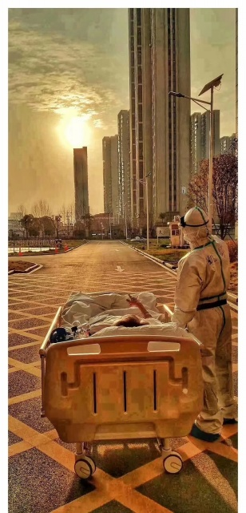

资讯详情
原文链接 备份链接 叶青武汉日记：中医局与卫健委可以平级吗？ 6259 来源：正和岛 作者：叶青 03-05正在打榜，当前第1 [ 砺石商业评论 砺石（北京） …
叶青武汉日记：真希望3月底能清零
 6511
6511
来源：正和岛
作者：叶青
03-06正在打榜，当前第3

[
智谷趋势

- -
](https://archive.ph/o/C35Pq/mp.zhisland.com/wmp/user/personal/other/home?uid=6564053664711835655)
推荐人

1、全国累计死亡病例3042例
5日，全国新增确诊病例143例，新增死亡病例30例（湖北29例，海南1例），新增疑似病例102例。截至5日，全国现有确诊病例23784例（其中重症病例5737例），累计治愈出院病例53726例，累计死亡病例3042例，累计报告确诊病例80552例，现有疑似病例482例。湖北新增确诊病例126例（武汉126例），新增治愈出院病例1487例（武汉1038例），新增死亡病例29例（武汉23例），现有确诊病例22695例（武汉20115例），其中重症病例5588例（武汉5208例）。累计治愈出院病例41966例（武汉27354例），累计死亡病例2931例（武汉2328例），累计确诊病例67592例（武汉49797例）。新增疑似病例43例（武汉42例），现有疑似病例285例（武汉232例）。新型冠状病毒疫情在全球持续蔓延扩散，目前除南极洲外六大洲均有确诊病例。截至欧洲中部时间5日上午10时（北京时间17时），中国境外共85个国家及地区确诊新冠肺炎14768例，死亡共计267例。与前一日相比，中国境外新增新冠肺炎2098例。截至欧洲中部时间5日23时，中国境外共78个国家累计确诊17637例。
2、从汉骂到汉喊
中央指导组专家组成员、中国工程院院士、天津中医药大学校长张伯礼，近日在武汉接受采访。说出的几个事情，武汉人没有不关心的。一是武汉有希望到3月底实现基本“清零”。张伯礼说：我们分析了疫情演变数据，全国除湖北以外其他地区，2月底新增病例基本“清零”；湖北省除武汉市以外其他地区，3月中旬估计能基本“清零”；武汉市有希望到3月底实现基本“清零”。二是最早提出建隔离点。他说：当时我们就向中央指导组提出，分层分类管理，集中隔离，分别处理。同时，对于确诊患者也要分类管理，轻症、重症分开治疗，可以占用学校、酒店。网民最早给我提的隔离点的建议是在1月24日。5日，湖北省中医院开设新冠肺炎出院患者康复门诊。在服务对象方面，目前主要针对隔离点患者、居家隔离患者提供恢复期治疗与康复指导；后期康复门诊将重点转向患者门诊复诊、随访、面对面诊疗与康复指导工作。广东设的比较早。3日，广东省第二人民医院正式启用全省首个新冠肺炎愈后复诊门诊。5日早上中央指导组在青山区翠园社区开元公馆小区考察时，有居民从家里的窗户向正在考察的中央指导组喊，“假的，假的”，主要反映的是社区物业假装让志愿者送菜送肉给业主，实际工作不到位的情况。这是汉骂之后的汉喊，效果不错。副总理当即要求省市领导深入了解情况并指出，群众有情绪很正常，这提醒我们，社区群众的基本生活保障还存在短板。不要掩饰矛盾，要实事求是，明确问题出在哪里，及时解决问题、化解矛盾，绝不能搞形式主义、官僚主义。大约4个小时以后，中央指导组召集省、市有关负责同志召开专题会议。这一喊，可能又会处理几个干部，但是喊来了居民生活的便利。武汉市立刻派人对社区的3000多户居民逐一上门，入户调查，了解具体诉求后着手解决。不喊不知道，一喊就知道。更重要的是要举一反三，解决普遍存在的问题。5日，武大人民医院东院，中山医院援鄂医生刘凯护送病人做CT的途中，停了下来，让住院近一个月的87岁老先生欣赏了一次久违的日落。

这张照片成为5日的网红照片。这反映了武汉市民对在阳光下自由地行走的一种期盼。前几天，京东、苏宁的无人车上岗，从仓库运送医疗物资到医院。医院的消毒无人车，也发挥了重要的作用。封闭小区，对外往来受到限制，无人机派上了大用场。5日，常青花园小区上空，四架顺丰快递的无人机来往穿梭，投送药品、鲜果等物资。快递无人机载重10千克，每天可完成派送130单左右。

3、把最头痛的问题加入医保体系
《中共中央 国务院关于深化医疗保障制度改革的意见》5日发布。 意见特别就完善重大疫情医疗救治费用保障机制专门作出制度性安排，提出在突发疫情等紧急情况时，确保医疗机构先救治、后收费，健全重大疫情医疗救治医保支付政策，完善异地就医直接结算制度，确保患者不因费用问题影响就医等要求。 针对中国医疗资源的严重不足，“奇人”黄奇帆又发声： 美日即使是小医院，配备的设施也和大医院一样。 国家要像修铁路、高速公路一样，修建中国公共卫生领域的基础设施，中国33000多家医疗机构可能会变成5万家、6万家，而政府主导的医疗机构的高质量设备投入就是一个巨大的增量市场。 全国2000多个县、400个地市州大都存在着各级医院等医疗体系不健全、人数也不到位的现象。 到2018年末，我国卫生人员总数有1230万人，如果通过政府投入让卫生人员总数达到6000万-8000万人，将会极大推动我国未来GDP的提升。 中美GDP对比，中国的一二产业、服务业中的传统服务业都超过美国，6万亿美元的差距在于教育与医疗。 这是十四五规划的重点，这也是民营企业的投资方向。 教育部公布2019年度普通高等学校本科专业备案和审批结果，新增备案专业1672个，包括虚拟现实技术、工业智能、区块链工程、应急管理、养老服务管理、智能感知工程、储能科学与工程、智慧农业等。 这些新专业大部分与这次抗疫相关，特别是区块链。在人命关天的时候，有人也敢报假数字，就是因为不是很容易查出来。区块链来了，问题就解决了。 山东大学管理学院谢永珍教授在《疫情数据治理体系建设的文化、结构与机制》一文中说： 可在原有“疾病与突发公共卫生事件网路直报系统”的基础上，采用可实现分布式记录数据的区块链技术，构建以政府为主导的国家级应急管理共享信息平台，形成各级政府、各种社会组织以及各企业的立体可预警、可验证、可溯源、可确权的数据系统。平台可根据出现的异常病例，计算疫情风险并启动预警，同时快速链接到节点上的相关部门。如此，在尚未明确病毒类型之前，便做好应急管控准备。 在2019年12月31日，武汉报告新冠肺炎疫情27例。如果张继先、李文亮等能够在第一时间通过区块链技术搭建的平台，把信息直报北京，而不是通过行政级次层层上报，那还有什么问题呢？
4、财大校友组织捐负压救护车
在此次抗疫中，年轻人，特别是90后表现出色。换上战袍，一群90后、00后挺身而出。 我们可以看几个案例： “我是党员，我年轻，身体素质好一些，我应该去一线。”这是23岁的武汉市第一医院老年病科护士，也是科室里年龄最小的党员刘紫荆上前线的最初想法。 在孝感市中心医院，8名95后“小姐姐”在80后党员护士长朱肖带领下，奔跑在发热门诊和隔离病房之间，转运患者160多人次。 在武汉，102名中南财经政法大学研究生，帮助洪山区部分社区开展电话排查，每人每天打100多个电话。 在全国各地，865名武汉大学学生在家中，为一线医护子女提供线上家教、心理陪伴。报名人数中，95后占比约95%、党团员比例达98%。 赤壁市新冠肺炎疫情防控指挥部下达通知，从5日到6日上午10点前，撤销该市各乡镇（办、场、区）之间以及村组之间的所有疫情防控交通卡口，打通物理隔离，恢复正常通行秩序。 赤壁市已连续19天没有新增新型冠状病毒感染的肺炎的病例，该市累计确诊病例200例，已治愈出院185例，病亡5例。 这是一个好消息。 5日，李克强主持召开中央应对新冠肺炎疫情工作领导小组会议，要求进一步做好疫情防控期间困难群众兜底保障工作。其中，特别提到，对受疫情影响无法外出务工、经营导致临时生活困难的城乡居民，符合条件的及时纳入低保。 这个问题，我在2月7日建议，对“日光族”“月光族”要关注。工资不高，几个月不开工资，上有老下有小，日子是不好过。纳入低保是可行的。 还有一件事也应该提一下的是，5日，湖北省第十三届人民代表大会常务委员会第十五次会议决定：接受蒋超良同志辞去湖北省第十三届人民代表大会常务委员会主任职务的请求，报省人民代表大会备案。 关于几天前武汉校友捐救护车的事，我专门向财大校友刘志存了解情况，他对我说： 2月17日，中南财大校友会荣誉理事刘勇师兄微信朋友圈在为武汉672医院和湖北肿瘤医院筹集负压救护车。 中南财大校友行动起来。 2月22日，第一辆救护车资金已有基金会资助。 2月28日，汉阳医院急需负压救护车，刘勇师兄问我（刘志存）是否愿意担任本次募捐小组负责人？很快在当晚九点多中南财大武汉校友会志愿者汉阳救护车募捐团队启动。资金来自上海一家机构：中国医保商会药融圈分会及800爱心人士。从团队成立到完成募集捐款不到12小时。 2月29日晚上八点，孝感肖港中心医院救护车志愿者团队启动。联系到北京春苗基金。车辆3月5日到汉。 此后启动洪湖燕窝镇负压救护车募集捐助项目，一天的时间，通过中南财大武汉校友会倡议，重庆校友会，南京校友会和上海校友会积极响应，募集资金19万，武汉校友会会长、中部名居董事长曾雪萍做资金兜底，相关捐赠手续已经完成。 与此同时，黄冈中心医院项目启动，狮子基金会接洽中…… 这种有针对性的捐赠，非常值得提倡。 一些名牌大学的MBA、总裁班，也可以以班为单位捐赠负压救护车。我了解，一辆车34万元左右。可以作为班级的“纪念品”。
5、意大利讨教技术
截止当地时间3月5日18时，意大利单日新增新冠肺炎病例769例，累计确诊3858例。目前意大利累计死亡病例148例，治愈414例。 意大利人着急了。 4日晚6点，同济心内科主任汪道文教授、心内科周宁副教授、感染科韩梅芳教授通过远程视频，向意大利米兰的尼瓜尔达医院麻醉与重症医学科专家Enrico Ammirati 等，传递了中国武汉救治新冠肺炎患者的经验。 “针对传染病的专门的负压病房不够怎么办？” “如何处理炎症风暴？” “如何控制好传染源？” “医护人员如何避免感染？”…… 在抗击肺炎的斗争中，中国先走了一步，中国治疗方案、经验、方舱医院、医生学者的感悟都输出国外，成为人类医疗库共同的财富。
6、小结
从汉骂到汉喊，只要反映问题，不必计较方式。 医保体系，随着一次次的灾难而完善。
早点用区块链吧，就不需要喊了。

[
以上文章内容，不代表正和岛平台观点
内容授权、投诉请联系neirong@zhisland.com
 举报内容
举报内容
](#)[](#)

原文链接 备份链接 叶青武汉日记：中医局与卫健委可以平级吗？ 6259 来源：正和岛 作者：叶青 03-05正在打榜，当前第1 [ 砺石商业评论 砺石（北京） …
原文链接 备份链接 6480 来源：正和岛 作者：叶青 03-04正在打榜，当前第1 1、武汉疑似病例降到234例 3日，全国新增确诊病例119例，新增死亡病例38例（湖北37例，内蒙古1例），新增疑似病例143例。截至3日，全国现有确诊 …
原文链接 备份链接 叶青武汉日记：方舱医院关了一家 5709 来源：正和岛 作者：叶青 03-02正在打榜，当前第3 [ 中国企业家杂志 - - …
原文链接 备份链接 非常时期，武汉成了全国人民挂念、祈福的城市。封城后，武汉人民的真实生活是什么样？随着抗“疫”有条不紊的进行，武汉发生了哪些变化？还存在哪些问题？ 正和岛自1月26日起特别推出“叶青专栏”。叶青是一位定居武汉40年的市 …
原文链接 备份链接 岛语 非常时期，武汉成了全国人民挂念、祈福的城市。封城后，武汉人民的真实生活是什么样？ 武汉在发生哪些变化？ 正和岛自1月26日起特别推出“叶青专栏”。叶青是一位定居武汉40年的市民，也是一名学者和官员。在过往多期的专 …